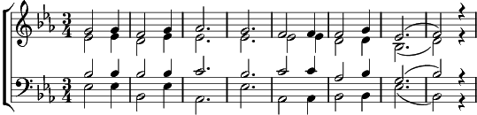

1. Heilig, heilig, heilig, heilig ist der Herr!
Heilig, heilig, heilig, heilig ist nur er,
er, der nie begonnen, er der immer war,
ewig ist und waltet, sein wird immerdar.
2. Heilig, heilig, heilig, heilig ist der Herr!
Heilig, heilig, heilig, heilig ist nur er.
Allmacht, Wunder, Liebe, alles rings umher!
Heilig, heilig, heilig, heilig ist der Herr!